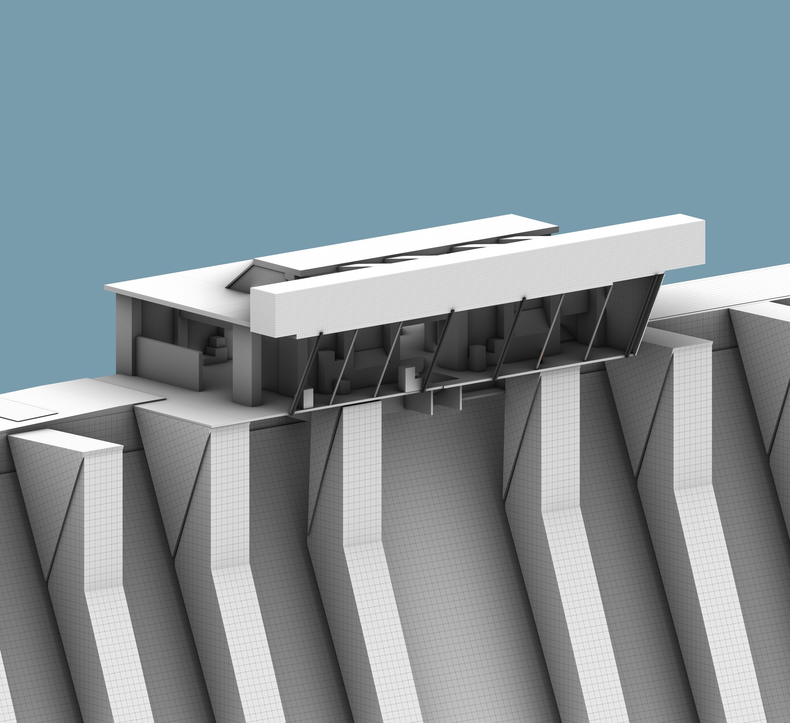

开放世界 · 探索 PVE · 第一章
Last Light · 最后的微光
设计约束 全章不放任务箭头与 UI 引导点。玩家能不能找到加油站，只取决于路网、 开阔度和远处的轮廓是否写得清楚——这件事我用自己的空间训练来解决。
- 7 个 POI 按威胁梯度排布：越深入住宅区，资源越值钱、危险越高
- 三条可达路线并存，对应不同的探索状态、耗时与容错成本
- 压力峰值放在回程而非去程——巡逻错位，逼玩家重读一遍地图
$ level designer · 关卡策划 · 郑州
我是李敬业，郑州大学建筑学五年制，现在做关卡。手上是三个 Unity 白盒： 两张 CS 5v5 竞技图（Borgo、Dam），和一个开放世界丧尸生存的第一章《Last Light》。 如果你只看一个——看最后那个。它没有 UI 引导点，玩家靠路网、视线和一盏灯找到终点。
关卡设计和建筑设计解决的是同一类问题：在一个空间里安排人的行为、视线与情绪。 下面是我认为可以直接迁移的六项能力。
空间序列与叙事组织
关卡节奏与情绪曲线设计
流线与动线规划
玩家动线引导与路径选择
人体尺度与空间感知
移动体感、掩体比例与战斗空间
视线设计与框景控制
视觉引导、信息投放与威胁预判
材质、光照与氛围营造
氛围塑造与场景叙事
图纸表达与方案汇报
关卡文档、动线图与团队沟通
三张 Unity 白盒：一个开放世界探索章节，两张 CS 竞技双包点地图。 每张点进去都不只是录屏——有设计约束、动线分析、POI 意图与迭代记录。
设计约束 全章不放任务箭头与 UI 引导点。玩家能不能找到加油站，只取决于路网、 开阔度和远处的轮廓是否写得清楚——这件事我用自己的空间训练来解决。

设计目标 用传统城区的紧凑尺度与现代建筑的开放形态形成对比，让建筑风格参与塑造玩家的移动路线与战斗节奏。

设计目标 以高低差与垂直交通为核心构建多层次战场，让玩家的每一次换层都改变视线与位置优势。
工作、项目与教育的完整轨迹。
核心服务海内外建筑专业留学生，独立完成 100+ 个项目的 3D 场景全流程制作，覆盖场地规划、建筑建模、材质灯光到渲染出图。对接抽象设计需求、跟进多轮改稿，适配不同海外院校的设计标准，项目均准时或提前交付。
通过无人机扫描采集道统祠的点云数据，完成高精度三维场景构建与还原，勘测数据被学院收录为教学案例，成果可直接导入 UE5 引擎场景使用。
主导团队完成从概念设计到实体搭建的全流程落地，具备空间方案从设计到执行的完整闭环能力。
GPA 3.40/4.0，专业排名 19/67。建筑学院美术素描、色彩、摄影实习获 A 等级（最高级）。
建筑学期间与接单完成的设计、建模与出图作品。 这里只挑出能体现空间引导、尺度控制与氛围营造的部分。
类型 · 年份 · 工作内容
类型 · 年份 · 工作内容
类型 · 年份 · 工作内容
类型 · 年份 · 工作内容
类型 · 年份 · 工作内容
类型 · 年份 · 工作内容
更多作品与过程文件可应要求提供。
按能力维度分组，只列真正能独立交付的部分。